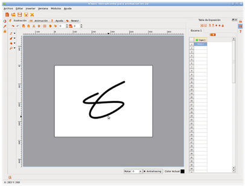

Componentes Principales
Hace muchos años atrás, cuando dimos inicio a este proyecto y nos encontrabamos diseñando la primera interfaz gráfica para KTooN, escogimos como su primera definición: "Paquete de Herramientas para Animación 2D". A pesar del paso del tiempo y de que apenas estabamos empezando, creemos que dimos en el blanco!
Cuando pienses en KTooN, piensa en una cajita de herramientas llena de diferentes componentes, cada uno diseñado para una labor específica. Ahora bien, vamos a darle un vistazo a cada una de las partes que componen nuestro ambiente de trabajo; este es el primer paso que debes dar para empezar a utilizar KTooN.
Nota: Debido a que aún nos encontramos en una fase beta de este desarrollo, es muy probable que algunas opciones o funcionalidades dentro de la interfaz sean modificadas o cambien de lugar; como consecuencia, mucha de la información que se encuentra en este manual será objeto de correcciones en versiones futuras.
La siguiente, es una típica pantalla de la aplicación en funcionamiento:

Fig #1. Interfaz Gráfica de KTooN
Ahora veamos las partes que la componen, un poco más en detalle:
Fig #2. Diagrama de Componentes de KTooN
- Barra de Menú Superior: es la barra convencional de opciones que se encuentra en la parte superior de la mayoría de programas de computador. En ella, se encuentran, separadas por categorías (Archivo, Editar, Insertar, Ventana, Módulos y Ayuda), todas las opciones generales del programa.
Fig #3. Barra de Menú Superior
- Panel de Funciones Básicas: se encuentra compuesta por botones asociados a las tareas basicas en la administración de archivos del programa tales como: Crear nuevo proyecto, abrir proyecto existente, guardar, guardar como y cerrar proyecto actual.
Fig #4. Panel de Funciones Básicas
- Área de Trabajo: es el area principal de la aplicación, es decir, el espacio donde diseñas, construyes y visualizas tus animaciones. El área de trabajo se encuentra conformada por cuatro pestañas, cada una de las cuales contiene uno de los siguientes módulos:
Fig #5. Pestañas de las áreas de trabajo
- Módulo de Ilustración: a través de su interfaz, en este módulo construyes los gráficos que harán parte de cada marco que estará contenido en tu animación. En otras palabras, este módulo no es otra cosa más que un pequeño editor de gráficos vectoriales muy sencillo.
- Módulo de Animación: básicamente, se trata de un visor que puedes consultar en cualquier momento para darte una idea de como está quedando tu animación.
- Módulo de Ayuda: este es el módulo que precisamente estás consultando en este momento.
- Módulo de Noticias: es una ventana directa a nuestra cuenta en Twitter. Así podrás estar enterado de las últimas noticias sobre este proyecto, como el lanzamiento de nuevas versiones, las funcionalidades implementadas en la versión de desarrollo, novedades, etc.
- Barra Lateral Izquierda: en este componente se encuentran tres botones asociados a algunas funcionalidades del módulo de ilustración:
Fig #6. Barra Lateral Izquierda
- Paleta de colores: este botón despliega un panel a través del cual puedes escoger el color o gradiente que quieras utilizar al momento de pintar con cualquier tipo de brocha.
- Brocha: este botón despliega un panel con las propiedades actuales de la brocha, como por ejemplo, el grueso de la misma y algunas características del trazo.
- Librería de objetos: este botón despliega un panel con la interfaz de administración de objetos de la librería asociada al proyecto. Si tienes un objeto o una imagen en particular que quieras almacenar y reutilizar en diferentes marcos de tu animación, este componente te será de mucha utilidad.
- Barra Lateral Derecha: similar a la izquierda, sólo que contiene botones asociados al proceso de animación:
Fig #7. Barra Lateral Derecha
- Manejador de Escenas: este botón despliega un panel que permite la administración de las escenas que componen una animación.
- Tabla de Exposición: este botón despliega un panel que permite visualizar la tabla de exposición de cada escena. A través de este componente, puedes administrar capas y marcos de tu proyecto.
- Manual de Ayuda: este botón despliega el manual que estás consultando.
- Barra Inferior: sobre esta región encontrarás un sólo botón, se trata de la opción que activa el panel de la Línea de Tiempo. Este herramienta, bastante utilizada por animadores de otros programas, te permite administrar capas y marcos, además de visualizar la forma en que se desenvuelven los fragmentos de tu animación en tiempo real.
Fig #8. Barra Inferior
- Panel de Propiedades: esta zona se crea temporalmente cada vez que haces click sobre uno de los botones que se encuentran en las barras laterales o en la inferior. Aunque en la imagen anterior, el panel aparece en la parte derecha de la interfaz, dependiendo de donde se encuentre el botón que escojas, puede aparecer del lado izquierdo o inclusive, en la parte inferior. Si vuelves a dar click sobre el botón que inicialmente escogiste, entonces el panel de propiedades se cierra.
- Barra de Estado: ubicada en la parte inferior del programa, esta barra por ahora sólo cumple una misión: desplegar las coordenadas (x,y) en las que se encuentra el cursor del ratón a medida que se mueve sobre el área de trabajo en el módulo de ilustración.
Fig #9. Barra de Estado